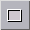
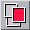
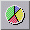
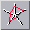
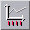
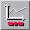
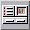
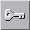

<!-- Documentation XQuad (c)1995-2000 AXENE contact axene@axene.org>
<html>

<head>
<title>Barre horizontale d'icônes &quot;Graphiques&quot;</title>
</head>

<body BGCOLOR="#FFFFFF" BACKGROUND="Images/back.gif" TEXT="#000000">

<p ALIGN="right">  </p>

<p><br>
<br>
La barre d'icônes 'manipulation des graphiques' permet de créer, de paramétrer des
histogrammes, des courbes, des aires, des camemberts, etc. Elle permet également de
modifier les plans d'affichage des cadres graphiques.<br>
<br>
</p>

<hr>

<p align="center"><br>
 <br>
<small><i>Photo d'écran : Barre d'icônes Graphiques </i></small></p>

<p><br>
</p>

<hr>

<p><br>
</p>

<h3>Première section de la barre d'icônes :</h3>

<ul>
  <li> <a NAME="select_mode_icon">le premier bouton
    icône permet de <b>quitter le mode création de cadre</b>. Lorsque l'on clique sur le
    second bouton de cette barre, XQuad passe en mode création de cadre. Ce bouton permet de
    revenir au mode sélection de cellule ou de cadre par défaut. </a><br>
    &nbsp;</li>
  <li> <a NAME="rectangle_frame_icon">le second bouton
    icône permet de<b> créer un cadre de forme rectangulaire</b>. <ol>
      <li>cliquer dans le plan d'affichage pour placer un sommet du rectangle </li>
      <li>déplacer la souris pour étirer la forme du rectangle </li>
      <li>cliquer pour placer le sommet diagonalement opposé du rectangle afin de créer le cadre
        </a></li>
    </ol>
    <a NAME="rectangle_frame_icon"><p>Cette opération est affectée par le magnétisme. Elle
    peut être annulée pendant l'étape 2 en cliquant avec le bouton droit de la souris. Pour
    <b>créer un carré</b>, presser la touche <tt>Shift</tt> pendant l'opération. </a></p>
    <p>&nbsp;</p>
  </li>
</ul>

<h3>Seconde section de la barre d'icônes :</h3>

<p>Tous les cadres sont positionnés sur des plans différents. Avec ces outils, il est
possible de modifier l'ordre des plans pour superposer les cadres à votre guise. 

<ul>
  <li> <a NAME="foreground_icon">le premier bouton
    icône permet de passer les cadres sélectionnés au <b>premier plan</b>, c'est-à-dire
    au-dessus de tous les autres. </a><br>
    &nbsp;</li>
  <li> <a NAME="background_icon">le deuxième bouton
    icône permet de passer les cadres sélectionnées au <b>dernier plan</b>, c'est-à-dire
    en-dessous de tous les autres. </a><br>
    &nbsp;</li>
  <li> <a NAME="forward_icon">le troisième bouton icône
    permet de <b>rapprocher d'un plan</b> les cadres sélectionnés, c'est-à-dire d'échanger
    le plan avec le cadre juste au-dessus. </a><br>
    &nbsp;</li>
  <li> <a NAME="backward_icon">le dernier bouton icône
    permet d'<b>éloigner d'un plan</b> les cadres sélectionnés, c'est-à-dire d'échanger
    le plan avec le cadre juste en dessous. </a></li>
</ul>

<p><br>
</p>

<h3>Troisième section de la barre d'icônes : </h3>

<ul>
  <li> <a NAME="vbars_icon">le premier bouton icône permet
    de <b>créer ou changer un graphique en histogramme</b>. Un histogramme est une
    représentation en barres verticales des valeurs. L'axe des abscisses du graphique est
    divisé de façon équitable entre les différentes séries et chaque sous-partie
    correspondant à une série est sous divisée de façon équitable entre les valeurs de la
    série. La légende d'un histogramme contient une entrée de couleur pour chaque valeur
    des séries. </a><br>
    &nbsp;</li>
  <li> <a NAME="hbars_icon">le deuxième bouton icône permet
    d</a>e <b>créer ou changer un graphique en barres</b>. Un graphique en barres est une
    représentation en barres horizontales des valeurs. L'axe des ordonnées du graphique est
    divisé de façon équitable entre les différentes séries et chaque sous-partie
    correspondant à une série est sous divisée de façon équitable entre les différentes
    valeurs de la série. <a NAME="OLE_LINK1">La légende d'un graphique en barres contient
    une entrée de couleur pour chaque valeur des séries. </a><br>
    &nbsp;</li>
  <li> <a NAME="curves_icon">le troisième bouton icône
    permet de <b>créer ou changer un graphique en courbes</b>. Un graphique en courbes est
    une représentation 'fils de fer' 2D des valeurs. Il y a autant de courbes de couleurs
    différentes que de séries. L'axe des abscisses est divisé de façon équitable entre
    les différentes valeurs des séries. La légende d'un graphique en courbes contient une
    entrée de couleur pour chaque série. </a><br>
    &nbsp;</li>
  <li> <a NAME="areas_icon">le quatrième bouton icône
    permet de <b>créer ou changer un graphique en aires</b>. Un graphique en aires est une
    représentation 'surface pleine' 2D des valeurs. Il y a autant de surfaces de couleurs
    différentes que de séries. L'axe des abscisses est divisé de façon équitable entre
    les différentes valeurs des séries. La légende d'un graphique en aires contient une
    entrée de couleur pour chaque série. Les valeurs d'une série sont additionnées aux
    valeurs correspondantes des séries précédentes avant d'être reportées dans le
    graphique. </a><br>
    &nbsp;</li>
  <li> <a NAME="pies_icon">le cinquième bouton icône permet
    de <b>créer ou changer un graphique en secteurs</b>. Un graphique en secteurs, aussi
    nommé camembert, est une représentation en secteur angulaire d'un disque. Il y a autant
    de disques que de séries. Chaque disque est divisé en autant de secteurs que de valeurs
    positives et non nulles de chaque série (les valeurs négatives et nulles sont exclues).
    Chaque secteur est caractérisé par une couleur et le pourcentage de la circonférence du
    disque utilisé. La légende d'un graphique en secteurs contient une entrée de couleur
    pour chaque valeur des séries. Dans un graphique en secteurs, il n'existe pas de lignes
    d'ordonnées. </a><br>
    &nbsp;</li>
  <li> <a NAME="radars_icon">le dernier bouton icône permet
    de <b>créer ou changer un graphique en radars</b>. Un graphique en radar est une
    représentation polaire 2D ressemblant à une antenne de radar. Pour chaque abscisse, un
    axe part d'une origine commune dans des directions circulairement réparties. Les valeurs
    de chaque série sont reportées sur les axes correspondant, formant une courbe de
    couleur. La légende d'un graphique en courbes contient une entrée de couleur pour chaque
    série. </a></li>
</ul>

<p><br>
Les boutons icônes de cette section ont un double rôle&nbsp;: soit créer un graphique
dans un cadre à partir des données des cellules sélectionnées, soit changer le type
d'un graphique sélectionné. La fonction de ces boutons dépend donc de ce qui est
sélectionné: soit des cellules de la feuille de calcul, soit un cadre contenant un
graphique. Lorsqu'un de ces boutons sert à la création d'un nouveau graphique, XQuad
passe en <a HREF="HBar_Graphics.html#rectangle_frame_icon">mode création d'un cadre
rectangulaire</a>. Le cadre, une fois défini, servira de conteneur au graphique. Si XQuad
n'arrive pas à détecter de façon certaine la <a HREF="Box_GraphSetup.html#geometry">géométrie</a>
des régions de cellules sélectionnées, alors la boîte de dialogue '<a HREF="Box_GraphSetup.html">Configuration du graphique</a>' sera ouverte automatiquement. </p>

<p><br>
</p>

<h3>Quatrième section de la barre d'icônes : </h3>

<p>Les boutons icônes de cette section permettent de modifier la configuration du
graphique sélectionné. 

<ul>
  <li> <a NAME="y_axes_icon">le premier bouton icône permet
    d'<b>afficher/cacher les lignes d'ordonnées</b>. L'action de ce bouton peut s'appliquer
    à tous les types de graphiques sauf aux graphiques en secteurs. Les graduations de l'axe
    des ordonnées seront étendues à toute la largeur du graphique. </a><br>
    &nbsp;</li>
  <li> <a NAME="legend_icon">le deuxième bouton icône
    permet d'<b>afficher/cacher la légende</b>. La légende peut être affichée ou cachée
    si, en fonction du type de graphique, les noms des séries ou les étiquettes de l'axe des
    abscisses existent. </a><br>
    &nbsp;</li>
  <li> <a NAME="absc_name_icon">le troisième bouton
    icône permet d'<b>afficher/cacher les étiquettes de l'axe des abscisses</b>. Les
    étiquettes de l'axe des abscisses n'existent que si le </a><a HREF="Box_GraphSetup.html#absc_label_button">troisième bouton</a> de la boîte de
    dialogue '<a HREF="Box_GraphSetup.html">Configuration du graphique</a>' est enfoncé. <br>
    &nbsp;</li>
  <li> <a NAME="series_name_icon">le quatrième bouton
    icône permet d'<b>afficher/cacher les noms des séries</b>. Les noms des séries
    n'existent que si le </a><a HREF="Box_GraphSetup.html#legend_button">cinquième bouton</a>
    de la boîte de dialogue '<a HREF="Box_GraphSetup.html">Configuration du graphique</a>'
    est enfoncé. <br>
    &nbsp;</li>
  <li> <a NAME="graph_name_icon">le cinquième bouton icône
    permet d'<b>afficher/cacher le titre du graphique</b>. Le titre du graphique n'existe que
    si les noms de séries et les étiquettes de l'axe des abscisses existent. </a><br>
    &nbsp;</li>
  <li> <a NAME="setup_icon">le dernier bouton icône permet
    de <b>changer la géométrie des régions de cellules</b> servant de source aux valeurs
    reportées dans le graphique. Ce bouton icône permet d'ouvrir la boîte de dialogue '</a><a HREF="Box_GraphSetup.html">Configuration du graphique</a>'. </li>
</ul>

<p><br>
</p>

<h3>Dernière section de la barre d'icônes : </h3>

<ul>
  <li> <a NAME="lock_icon">le bouton icône permet de
    verrouiller les cadres sélectionnés. L'action de <b>verrouiller un cadre</b> empêche
    tout déplacement et toute modification de ce cadre. Il suffit qu'un cadre soit
    verrouillé dans une sélection pour rendre toute cette sélection inaltérable. Le
    curseur souris prend la forme d'un sens interdit lorsqu'il pointe sur un cadre
    sélectionné et verrouillé. Ce bouton icône est activé si un des cadres de la
    sélection est verrouillé. Pour <b>déverrouiller</b> une sélection de cadre, il suffit
    de désactiver ce bouton. </a></li>
</ul>

<p><br>
</p>

<hr>

<p ALIGN="right"></p>
</body>
</html>
